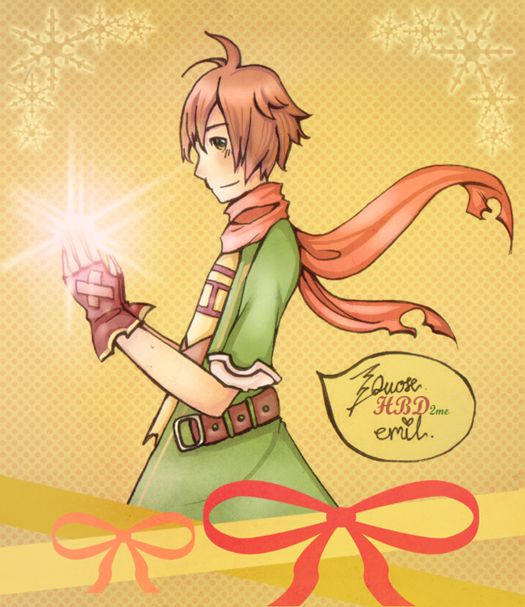

my dear eco,
ลิ้งค์ข้อมูล
เนโกะมาตะ (ขาดคุโระ)
http://www.econline.jp/data/shoulder/index.html
เหล่า NPC (มีแต่ตัวเบสิกน่อ)
http://www.econline.jp/data/npc/index.html
มอนสเตอร์ (มีแต่ตัวเบสิกเหมือนกัน)
http://www.econline.jp/data/monster/index.html
เพ็ท (อัพใหม่สุด กระรอกชมพู)
http://www.econline.jp/data/pet/index.html
รูปบัตรต่างๆ (คลิกดูบัตรอื่น ที่รูปทางซ้ายมือ)
http://www.econline.jp/md/kuji/log_electromemories.html
เว็บ 1 ใน คนวาดอาร์ตเวิร์คอีโค่ (แนวน่ารัก+เท่)
http://kirouran.web.infoseek.co.jp/gh/index.html
เว็บ 1 ในคนวาดอาร์ตเวิร์คอีโค่ (แนวน่ารัก เลื่อนดูไปเรื่อยๆ ล่างสุดกด 前の10件 | - ECOブログトップ จะไปหน้าย้อนหลังให้)
http://syamaeco.blog.so-net.ne.jp/archive/c20359356-1
คนวาด [COMIC] เทศกาลซากุระบาน
http://knoie.exteen.com
กระทู้แจกรูปแฟนอาร์ต [โหลดโหด]Fanart สวยๆเอามาแจก--สารบัญหน้าแรกครับ--UPDATE!~X (อัพล่าสุดปี 2010)
http://board.onenet.co.th/viewtopic.php?t=62507
----------------------------------------------------------------------
ถ้าใครมีเว็บอาร์ตเวิร์ค หรือแฟนอาร์ตอื่นใด กรุณาเม้นท์ทิ้งไว้ด้วยนะครับ
ผมอยากจะวาดรูปแฟนอาร์ต เลยพยายามหาข้อมูลอื่น นอกจากรูปในเกมส์ ^^
รักเสมอ , quose

----------------------------------------------------------------------
รูปแรก อีมิล
เป็นเผ่าแรกที่เราเล่น เพราะชุดนี้แหละ 555 ชอบสีชุดนี้มาก (แล้วจะมาลงสีเร็วๆ นี้)
อ่านจากการ์ตูน อีมิลเป็นคนที่ใจดี
ทั้งๆที่ บางครั้งตัวเองไม่อาจช่วยเขาได้
แต่ก็พยายามสุดกำลังเพื่อที่จะทำ
รักที่สุด*อีมิล >w<

----------------------------------------------------------------------
สุขสันต์วันเกิดให้ตัวเอง
ด้วยรูปอีมิล ในที่สุดก็เสร็จแล้ว >w<
สีผมไม่ค่อยเหมือนเลย ฮา
แต่พยายามให้เหมือนแล้วนะครับ
ยิ่งวาดยิ่งเศร้า
ไม่อยากให้อีโค่ปิดเลย T^T



 (ชักไม่แน่ใจ)
(ชักไม่แน่ใจ)